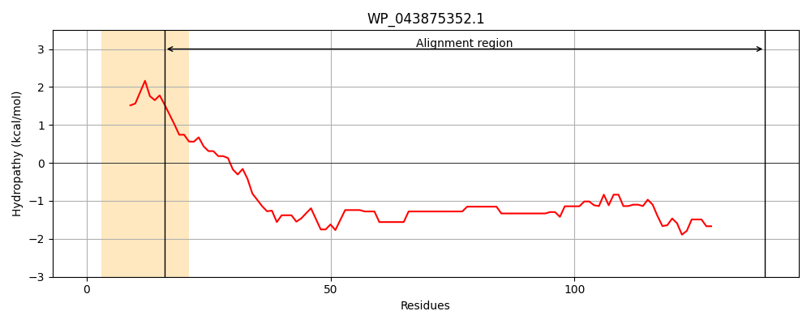
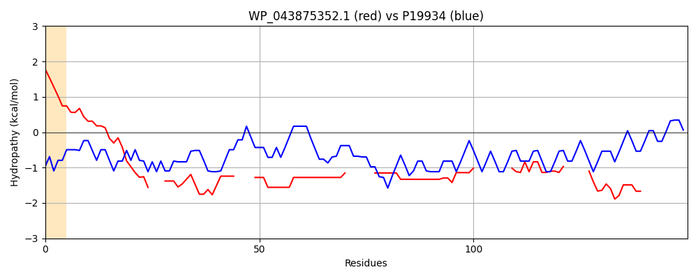

Hit Accession: P19934
Hit TCID: 2.C.1.2.1
Hit Description: gnl|BL_ORD_ID|9322 gnl|TC-DB|P19934|2.C.1.2.1 TOLA PROTEIN - Escherichia coli.
Mach Len: 150
e:0.000000
Query TMS Count : 1
Hit TMS Count: 2
TMS-Overlap Score: 0.000000
Predicted Substrates:CHEBI:8150;phospholipid
BLAST Alignment:
Score: 140 , Bit scores: 58 bits, E-value: 5.0e-11, Alignment length: 150, Percentage identity: 40
Query: 16 SSAAFAADAVSTTQAPAATHSTAAK---TTHHKKHHKAAAKPAAE----QKAQAAKKHKKAEAKPAAAQKA------QAAKKHKKVEAKPAAPQKAQAAKK--------HHKAAAKPVAQKA-----QAAKKHHKTTKHQAAKPAAQPAA 139
++A AADA + +A A AAK KK AAK AAE +A AA KKAEA AAA +A +AA+K K K AA +KA A KK KAA K A+KA AA+K K AAK AA+ AA
Sbjct: 137 AAAKAAADAKAKAEADAKAAEEAAKKAAADAKKKAEAEAAKAAAEAQKKAEAAAAALKKKAEAAEAAAAEARKKAATEAAEKAKAEAEKKAAAEKAAADKKAAAEKAAADKKAAEKAAAEKAAADKKAAAEKAAADKKAAAAKAAAEKAA 286 | Protein Hydropathy Plots: |
|---|
|  |  |
Pairwise Alignment-Hydropathy Plot:
|
|---|
|  |